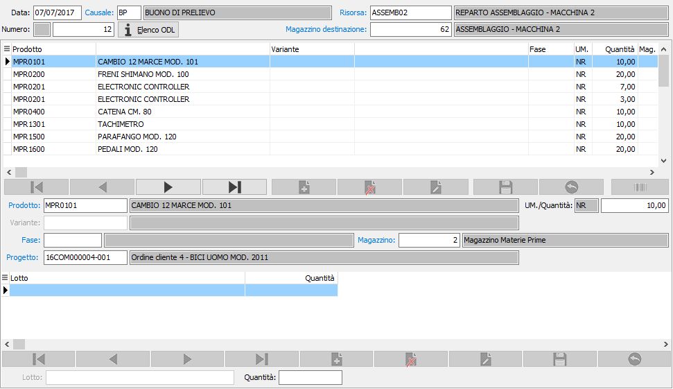
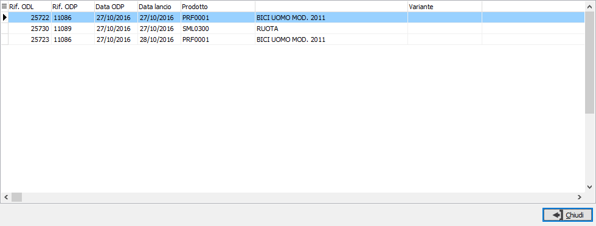
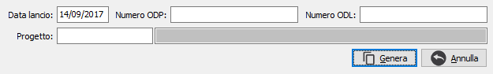

Se attiva la gestione matricole sarà possibile accedere dal singolo rigo/dettaglio alla finestra delle matricole tramite il pulsante sul rigo o tramite il pulsante Matricole in alto con cui si accede alla finestra di gestione massiva.
Manutenzione buoni di prelievo
I buoni di prelievo vengono utilizzati per gestire la fase di trasferimento dei materiali ai magazzini WIP; possono essere generati automaticamente oppure inseriti manualmente a seconda che il parametro “Gestione buoni di prelievo” presente nella configurazione “Piano di produzione” si gestito o meno. E’ possibile utilizzare i buoni di prelievo attraverso tre diverse modalità:
BP generato contestualmente al lancio in produzione (parametro “Gestione buoni di prelievo” attivo): per gli ODL pianificati in fase di salvataggio del lancio in produzione vengono generati i BP (uno per ogni risorsa); la generazione può tenere conto di eventuali giacenze e/o disponibilità del magazzino della risorsa (tale controllo viene attivato il base al parametro “Tipo controllo giacenza WIP” presente nella configurazione “Piano di produzione”).
BP generato autonomamente (parametro “Gestione buoni di prelievo” attivo): attraverso l’apposita funzione “Generazione buoni” vengono selezionati gli ODL lanciati che non hanno generato buono e vengono generati i BP (uno per risorsa); la generazione tiene conto di eventuali giacenze e/o disponibilità del magazzino associato alla risorsa (tale controllo viene attivato il base al parametro “Tipo controllo giacenza WIP” presente nella configurazione “Piano di produzione”).
BP inserito manualmente (parametro “Gestione buoni di prelievo” non attivo): la compilazione del BP viene fatta tramite la funzione “Manutenzione buoni” in cui l’operatore può inserire manualmente i materiali (e gli eventuali lotti se gestiti) da trasferire; è possibile, tramite il bottone “Genera righe” far proporre le righe dei componenti degli ODL lanciati nella data richiesta a video.
Il buono di prelievo si compone di una testata dove è necessario inserire la data, la causale tramite cui sarà proposto il numero, la risorsa di destinazione da cui sarà dedotto anche il magazzino di destinazione che è un campo obbligatorio; per proporre il magazzino di destinazione viene letta la risorsa e se presente il magazzino WIP viene utilizzato, altrimenti viene utilizzato, sempre se presente, il magazzino WIP del reparto a cui la risorsa è associata ed in ultimo viene proposto il magazzino WIP di configurazione.

Nel corpo del buono di prelievo vanno inseriti i prodotti oggetto del trasferimento con l'indicazione obbligatoria del magazzino di prelievo e della quantità; se il prodotto gestisce un dettaglio lotti o ubicazioni le quantità saranno imputabili nella parte sottostante il rigo dove deve essere indicato anche il lotto/ubicazione, la quantità del rigo sarà disabilitata.
Al momento del salvataggio, premendo il pulsante Salva presente nella Toolbar o il tasto funzione F10, sarà registrato il buono di prelievo, generati i movimenti di magazzino ed in fase di inserimento sarà richiesto se effettuare la stampa del buono di prelievo appena registrato.
Nella testata del documento è presente il pulsante Elenco ODL che consente di visualizzare in una finestra quali ODL hanno originato il buono di prelievo; il buono di prelievo generato dal lancio o dalla procedura di Generazione buoni di prelievo non è modificabile.


Se non è attiva la gestione dei buoni di prelievo da configurazione, sarà presente nella testata del documento anche il pulsante Genera righe, attivo solo in inserimento di un nuovo buono di prelievo che non contenga già delle righe; il pulsante apre la finestra mostrata a lato che richiede la data del lancio, il numero ODP, il numero ODL e se gestito anche il progetto; sulla base dei limiti inseriti, la data del lancio è obbligatoria, vengono calcolati i fabbisogni dei lanci selezionati e generate le relative righe; se è attivo il controllo delle giacenze non vincolante durante la generazione delle righe saranno dati i messaggi qualora vi siano problemi con le giacenze, se è attivo il controllo vincolante non saranno generate le righe in caso di errore sulle giacenze del prodotto e sarà lasciata la quantità a zero nel caso di errore sulle giacenze di un eventuale dettaglio lotti/ubicazioni, ma comunque l'elaborazione non si interromperà. Terminata la generazione delle righe sarà compito dell'operatore effettuare il salvataggio dopo aver apportato eventuali modifiche o correzioni.
Tramite il pulsante Barcode, se presente ad attivo il relativo modulo è possibile inserire nel documento dati provenienti da lettori ottici. Prima di effettuare la lettura dei barcode compare, se la configurazione lo prevede, la finestra di generazione da fabbisogni ODL per l'inserimento dei parametri di ricerca degli ODL e sei i barcode importati corrispondono ad articoli presenti sugli ODL relativa alla ricerca le righe generate vengono collegate agli ODL.
|
Se attiva la gestione matricole sarà possibile accedere dal singolo rigo/dettaglio alla finestra delle matricole tramite il pulsante sul rigo o tramite il pulsante Matricole in alto con cui si accede alla finestra di gestione massiva. |